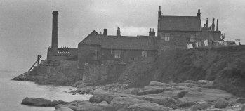
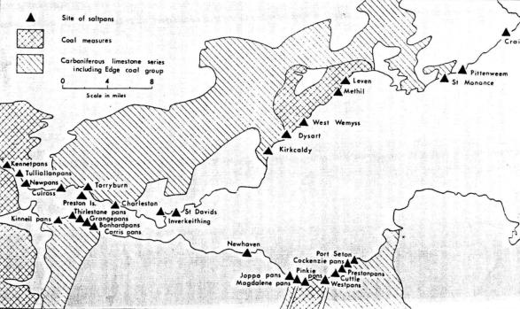
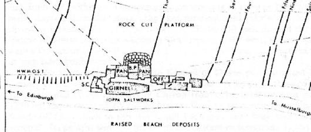
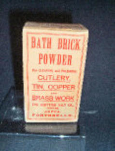
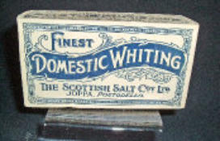
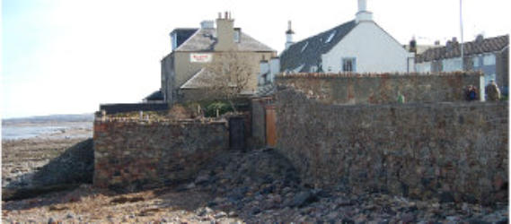
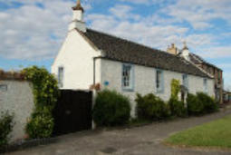
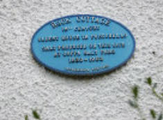
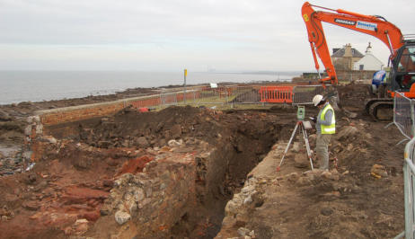

Joppa Salt Works

‘A smokey, malodorous place, consisting of a group of sooty buildings situated on the sea-shore half way between Portobello and Musselburgh’ was how Joppa appeared to William Chambers in 1815 when the future publisher and Lord Provost of Edinburgh‘s family moved there when his father was appointed commercial manager of the Salt Works. The production of salt by evaporating seawater gathered in large pans using coal from the shallow local mines had been carried on in Joppa since the 1630s, part of an extensive industry along both shores of the Firth of Forth.

Originally the salt was made entirely by evaporation of sea water, but later rock salt was imported from England because the salt water product contained impurities that made it less suitable for preserving food. In the late 18th and early 19th centuries there was a tax on salt, considerably higher in England than in Scotland, and this led to a great deal of smuggling of salt into northern England, much of the produce of the Joppa Pans being used in this illicit but profitable traffic. The Chambers household were never very happy during their years at Joppa Salt Works. William goes on, ‘The business in itself violated all my father's notions of propriety. It consisted almost wholly in supplying material for a contraband trade across the Border to England,’ and later he describes their house at the Pans as ‘almost the most revolting of human habitations.’ However, he does concede that, ‘The Sundays spent on the shore of the Firth of Forth formed a refreshing change on the ordinary course of life [at work during the week in Edinburgh]. The salt-pans had ceased to send up their nauseous vapours and clouds of smoke.’

Late in the 19th century Joppa Salt Pans and the houses were taken over by the firm, Alex. Nisbet and Son, who also owned the salt pans at Prestonpans and Pinkie. They later formed The Scottish Salt Co. which went on producing salt at Joppa until 1953 when the last salter, Mr Towers retired. During the 20th century the company diversified into other household products in addition to salt in an attempt to meet the competition from larger manufacturers. Two such products are shown here.


The last remnants of the Salt Pans and their small cottages were cleared away and the site is now laid out under grass, bounded on the seaward side by a low wall. But two houses once connected with the pans still remain, Rock Cottage and Rockville, between the cleared space and the Eastfield bus terminus. Rockville, now the Rockville Hotel, was built towards the end of the 19th century for the use of the Nisbet family and for a time Rock Cottage was occupied by salters employed at the pans. The house deteriorated considerably, but it was eventually renovated in the 1950s and is now a most attractive little dwelling with a fine outlook at the back over the Firth of Forth. It is about 400 years old, sturdily built with walls five feet thick, and reputed to be the oldest house on this part of the coast and certainly older than the original Portobello House. Reputedly, it was a hunting lodge belonging to the Earl of Moray long before the days of the Salt Pans.



References: Scottish Geographical Magazine, December 1965 St. Philip’s, Joppa – The Parish and the Church (W Allan Maclean, 1976)
Archaeological Investigations in 2011

Click here to read the Excavation Report courtesy CECAS and Headland Archaeology Ltd
Click here for Site information courtesy CECAS & Headland Archaeology